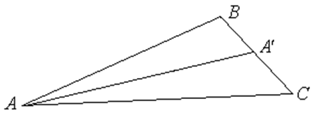

П 4.4 №14
Даны точки , , . Найдите длину медианы треугольника
.
РЕШЕНИЕ:

Координаты точки
(середины ) , , .
Ответ:7.
 ..
.. (середины ) , , . (середины ) , , .. (середины ) , , .
(середины ) , , . (середины ) , , .. (середины ) , , .